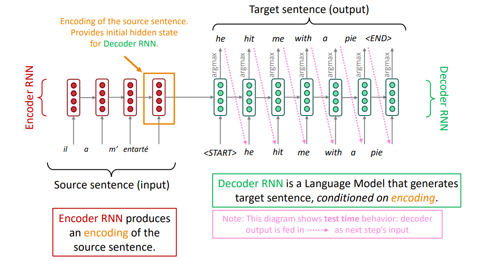

NMT
1. Seq2seq Model

The general notion herer is an encoder-decoder model
- One neural network takes input and produces a neural representation.
- Another network produces output based on that neural representation.
- If the input and output are sequences, we call it a seq2seq model.
Many NLP tasks can be phrased as sequence-to-sequence:
- Summarization (Longtext -> short text)
- Dialogue (previous utterances -> next utterance)
- Parsing (input text -> output parse as a sequences)
- Code generation (natural language -> Python code)